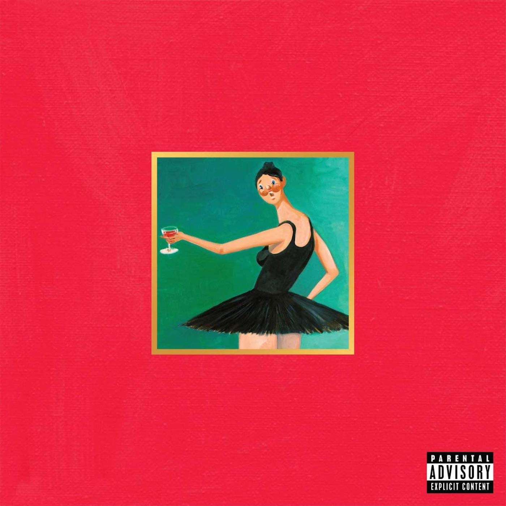
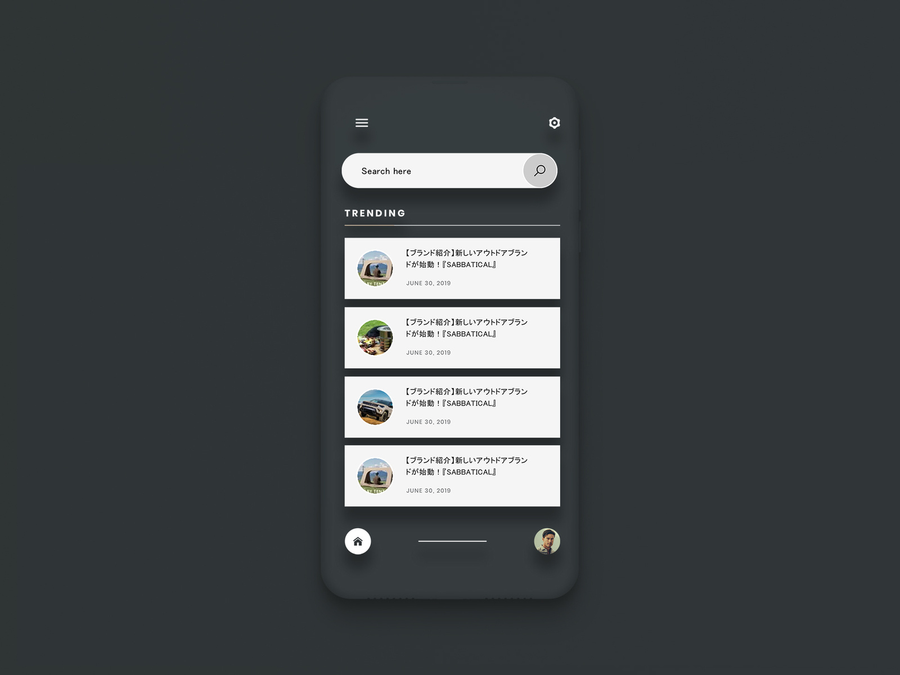
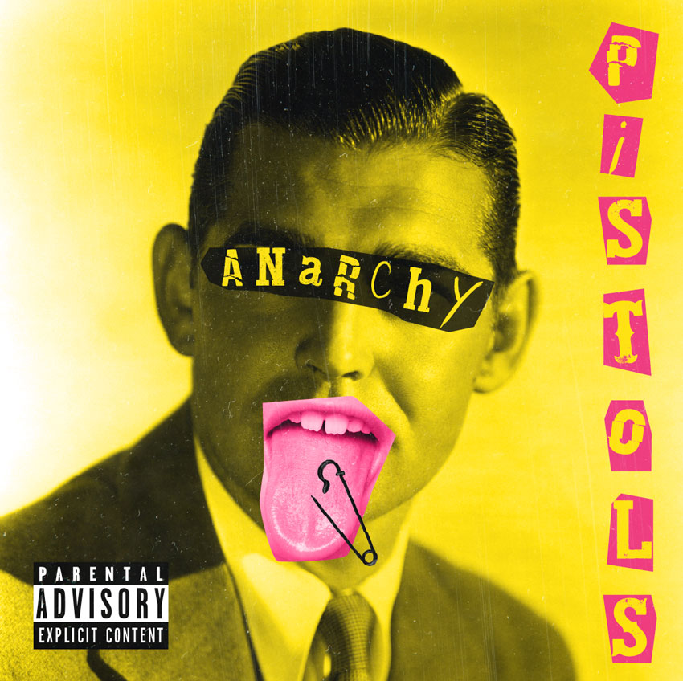

google aria
manage asthma on the go
ux casestudy
capital one
easily budget, and track save personal finances all within one convenient app
ux casestudy
paws & claws
connecting pets with families
ux casestudy.png)
mirror
from physical to online presence
ux casestudy

stashwealth
startup investment advisory agency seeks revamped brand identity
brand identity

sabbatical
reflecting on my professional break - UX style
ux casestudy

poshmark
Make money selling things
programming ux casestudy